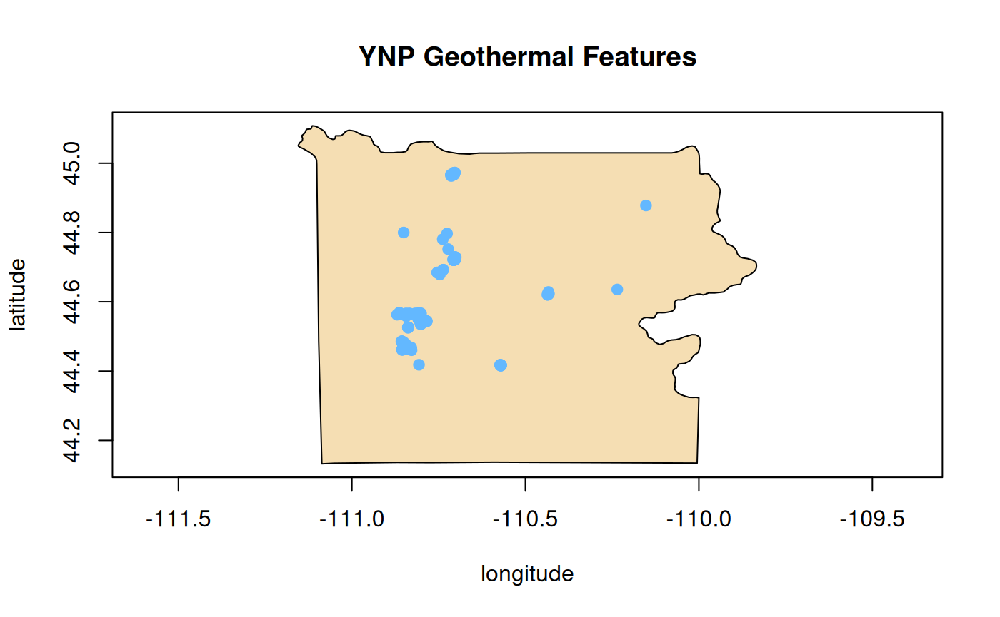
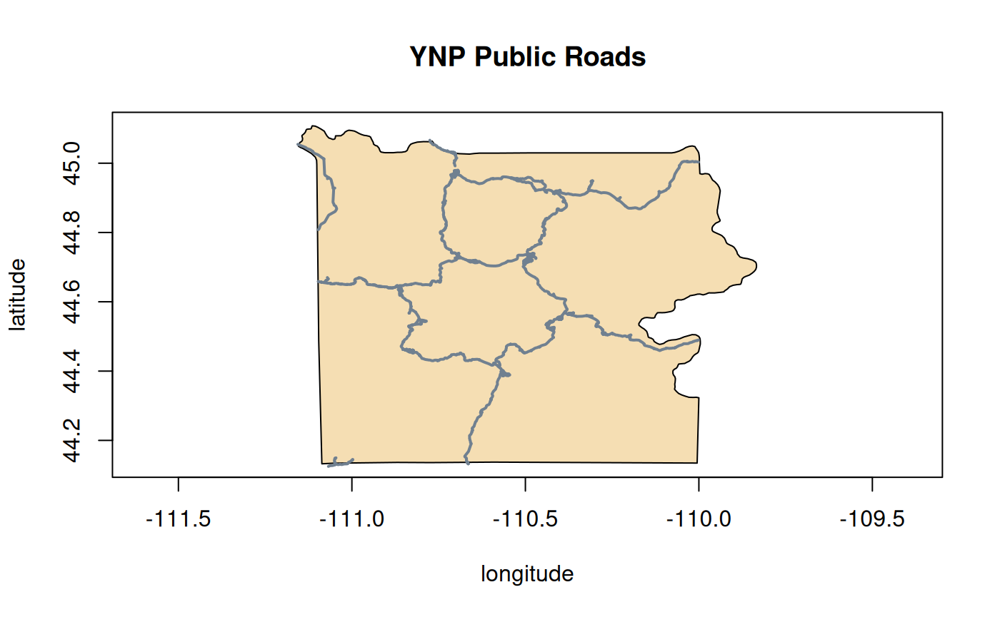
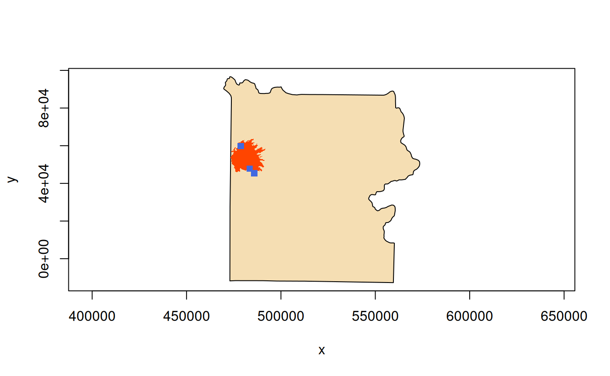
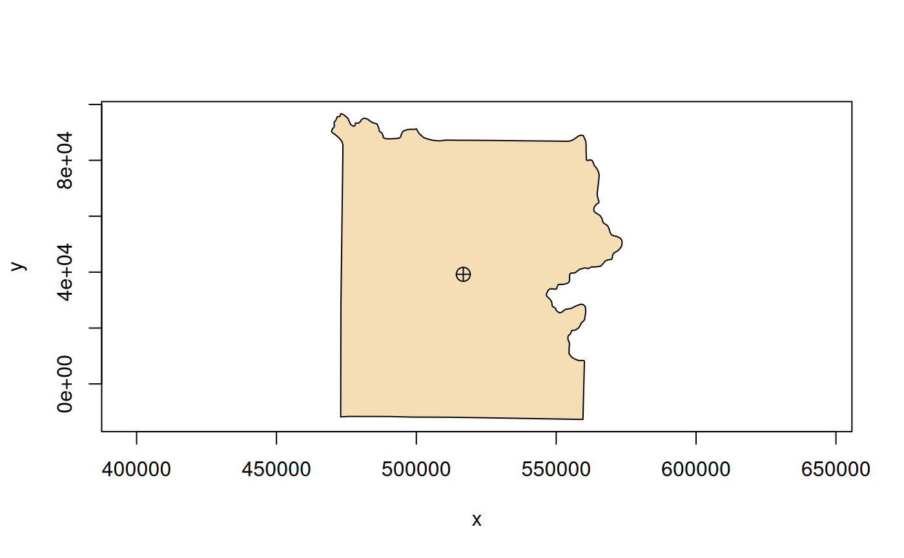
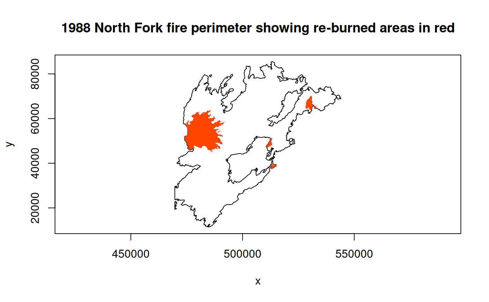

Background
Beginning at version 2.0, gdalraster includes bindings to a substantial subset of the GDAL Vector API. The vector bindings provide an R implementation of the GDAL Vector Data Model. Readers are encouraged to review that document for background on the underlying object model and how it relates to usage of the API in gdalraster.
The prefix OGR
is used in GDAL with class names, command-line utilities, etc., that
refer to vector-specific components of the library. In
gdalraster, “ogr” will be used throughout the
documentation and as a prefix on function names, consistent with the
style of the source library. There is also a certain amount of
unification of the raster and vector APIs in GDAL. In
gdalraster, we will also refer to the “GDAL Vector API”
and use GDALVector as a class name. To support the vector
API, gdalraster 2.0 builds on its already existing
bindings to portions of GDAL’s Spatial Reference System and Geometry
APIs.
Rationale
As an implementation of GDAL’s Raster and Vector Data Models, gdalraster is not intended as a direct alternative to existing R packages such as sf and terra that primarily implement higher-level analytical data models. gdalraster is primarily focused on API-level bindings, attempting to expose most of the underlying C++ library in R. More direct access to GDAL’s I/O capabilities may benefit workflows that deal with source data provided on a continuum ranging from local storage and in-memory formats to database servers and cloud systems, often involving various compression formats, SQL dialects, etc. Modularized, low-level access to GDAL/OGR functionality should be of interest to R developers creating higher-level interfaces, where the analytical data models may not have been designed with their use cases in mind. API bindings facilitate code translation and reuse which can benefit hybrid environments where GDAL is used from multiple languages. Long-term stability of bindings at the library level is desirable in production scenarios, and is a major goal for the package. It is intended that gdalraster should complement and interoperate within R’s extensive and evolving spatial ecosystem.
Vector API components
This section describes the organization of the vector components in gdalraster, linking to package documentation for extended text on specific topics.
Core bindings
Core functionality for vector is provided by the exposed C++ class
GDALVector, along with a set of stand-along functions with
ogr_ prefix.
Class GDALVector
GDALVector is a C++ class exposed in R via Rcpp
modules. It encapsulates a single OGRLayer and the GDALDataset that
contains it. An object of class GDALVector persists an open
connection to the dataset, and exposes methods to:
- retrieve layer information
- set attribute and spatial filters
- set ignored fields/selected fields
- traverse and read feature data by traditional row-based cursor
- fetch the full feature set and return as a data frame
- fetch progressively in batches of
nfeatures at a time - read via column-oriented ArrowArrayStream
- write new features in a layer
- upsert
- edit/overwrite existing features
- delete
- perform operations within transactions
A GDALVector object is typically generated with a call
to new() but is also returned from certain
ogr_*() functions. The documentation for
?GDALVector gives a full list of available methods in the
Usage section, along with their descriptions under Details. Methods of
the class are accessed using the $ operator.
OGR stand-alone functions
Several of the stand-alone ogr_*() functions are grouped
under the documentation topics ?ogr_manage and
?ogr_define. The ogr_manage functions can be
used to:
- create new vector datasets from scratch
- test for existence of datasets, layers and fields
- test dataset and layer capabilities
- create new layers in an existing dataset
- delete layers
- create new attribute and geometry fields on an existing layer
- rename and delete fields
- edit data with SQL statements
ogr_define provides documentation and helper functions
for defining feature classes. An OGR feature class definition (a.k.a.
layer definition) is modeled in R as a named list containing zero or
more attribute field definitions, along with one or more geometry field
definitions. Specifications of the the list structures for these
definitions are given in ?ogr_define. The associated helper
functions make it easy to create new layer definitions from scratch or
modify an existing definition. A layer definition is convenient but not
required for creating a new vector dataset, or a new layer within an
existing dataset, using ogr_ds_create() /
ogr_layer_create().
OGR facilities for vector geoprocessing are available in
ogr_proc(). This function can perform the following GIS
overlay operations: Intersection, Union, SymDifference, Identity,
Update, Clip and Erase (https://en.wikipedia.org/wiki/Vector_overlay).
ogr_proc() is basically an R port of the command-line
utility ogr_layer_algebra
included in the GDAL Python bindings. In both cases, these are
interfaces to library functions in the OGR C++ API.
ogrinfo() and ogr2ogr(), provide R wrappers
of the GDAL command-line utilities ogrinfo
and ogr2ogr.
These functions support all of the command-line arguments described in
the GDAL documentation, providing a powerful set of capabilities for
obtaining information about an OGR-supported data source, converting
vector data between file formats, and potentially editing data with SQL
statements. ogr_reproject() is a convenience wrapper around
ogr2ogr() for reprojecting vector layers with a user
friendly interface.
Supporting APIs
Spatial Reference Systems
Bindings to a subset of GDAL’s Spatial Reference System API are
provided by a set of stand-alone srs_*() functions. These
support conversion of spatial reference definitions in various formats
to OGC Well Known Text (WKT) representation (e.g., from EPSG codes, well
known names such as NAD27, NAD83, WGS84, etc., PROJ.4 definitions,
PROJJSON, and others, as well as between different versions of OGC WKT,
see ?srs_convert). Functions under the
?srs_query topic provide various information about a given
SRS definition, and support testing definitions for equality.
Geometry
Bindings to a significant subset of GDAL’s Geometry API are
implemented in a set of functions prefixed g_*(). Many of
these functions are built on the GEOS
library (i.e., use GEOS via GDAL headers).
The geometry functions offer flexibility by allowing input geometries
to be given as either a single WKT string, a
character vector of WKT strings, a single raw vector
containing WKB, or
a list of WKB raw vectors. Output geometries are in WKB
format by default, but WKT can also be requested. The convenience
function g_wk2wk() will convert its input from one to the
other accordingly.
The factory functions g_create() and
g_add_geom() support creating basic geometry types from
point data (vertices), and building container geometry types from
sub-geometries. Other capabilities of the geometry bindings include:
- inspection (see
?g_query) - binary predicates (see
?g_binary_pred) - binary operations (see
?g_binary_op) - unary operations (e.g.,
g_buffer(),g_simplify()) - measurements (see
?g_measures) - miscellaneous utilities (e.g.,
g_coords(),g_make_valid(),g_swap_xy(),g_transform())
Convenience functions for working with bounding boxes are also
provided (e.g., convert to/from WKT, intersection/union, and
bbox_transform()).
Virtual Systems Interface
Bindings to the GDAL’s Virtual Systems Interface (VSI) implement
standard file system operations abstracted for URLs, cloud storage
services, Zip/GZip/7z/RAR, in-memory files, as well as “regular” local
file systems. This provides a single interface for operating on file
system objects, that works the same for any storage backend. The
vsi_*() functions have general utility not limited to
operating on spatial data sources.
Class VSIFile implements bindings to the GDAL
VSIVirtualHandle API, providing analogs of Standard C file I/O functions
that operate on VSI file systems (seek(),
tell(), read(), write(),
etc.)
General data management
Existing data management functions that operate on both raster and
vector data sources include addFilesInZip() (supporting
create/append to a potentially Seek-Optimized ZIP file),
deleteDataset(), identifyDriver() and
inspectDataset().
Workflow considerations
Creation of new vector datasets, and schema modification in existing
datasets, are performed with the ogr_*() stand-alone
functions. These are “one-off” operations that attempt to open the
dataset with update access, perform modifications, and then close the
dataset.
Objects of class GDALVector are used for obtaining layer
information and reading/writing feature data. A GDALVector
object provides a persistent connection to a layer and the vector
dataset that contains it. That is, once instantiated, a
GDALVector object represents a live connection to the
dataset until its $close() method is called. The connection
may be read-only (by default), or may be with update access allowing
insert of new features, modifying exiting features and deleting
features. Currently, class GDALVector does not provide
methods for modifying the layer schema.
It is not recommended to instantiate a new GDALVector
object on a layer that is already open for update access (i.e., with
read_only = FALSE). Likewise, potential modifications to a
layer schema using the ogr_*() management functions should
be done prior to instantiating a GDALVector object on the
layer.
Relational database management systems (RDBMSs, e.g., GPKG / SQLite,
PostgreSQL / PostGIS) generally support multiple connections including
concurrent reads (e.g., multiple instances of GDALVector
reading from different layers). It is also possible to have one or more
GDALVector objects instantiated on RDBMS-based layers for
read access, while another GDALVector object performs write
operations on a different layer in the same database. Database locking
mechanisms for write operations are specific to the driver and
underlying RDBMS (see, e.g., SQLite Configuration
Options and Performance
Hints).
Data retrieval
A GDALVector object supports traditional cursor-based
traversal over the features (rows) in a layer, and optionally,
column-oriented retrieval via Apache
Arrow C stream interface (with GDAL >= 3.6). Data retrieval may
be performed against a vector layer in full, a layer with attribute
and/or spatial filters applied, or a layer defined as the result set of
an SQL statement executed on the underlying data source.
OGR methods that retrieve a single feature (i.e.,
$getFeature(), $getNextFeature()) return data
in a named list of fields and their values. GDALVector also
provides the $fetch() method to retrieve a batch of
n features from the current cursor position and return them
in a data frame. The $fetch() method is an analog of DBI::dbFetch()
with essentially identical calling semantics. Specifying
n = -1 or n = Inf will retrieve all features
from the beginning (honoring any spatial or attribute filters that may
be in effect).
Currently, gdalraster implements only minimal S3
class interfaces for R objects containing the returned feature data. A
single feature as returned by
$getFeature()/$getNextFeature() is a list
object carrying the "OGRFeature" class attribute. A data
frame returned by $fetch() carries the
"OGRFeatureSet" class attribute. S3 methods are provided
for the print() and plot() generics as a
convenience for examining output. Otherwise, there are currently no S3
classes for geometries or geometry columns, no concept of “sticky”
geometry as implemented in package sf, and no automatic
propagation of coordinate reference systems. S3 interfaces may expand in
future versions, but gdalraster leans toward minimalism
and the use of simple, lightweight objects for holding raw data.
Interoperability
The $fetch() method of a GDALVector object
returns geometries in a list column of WKB raw vectors by default. The
Geometry API functions (g_*()) also operate by default on
lists of WKB raw vectors. Representation of geometries as WKB is compact
and performant, and seamlessly integrates with the parsing, conversion,
manipulation and plotting functions in package wk
(a gdalraster dependency for vector plotting, and
currently used for g_coords()).
The $getArrowStream() method of a
GDALVector object allows retrieving data in a
column-oriented memory format. It exposes an ArrowArrayStream on a layer
as a nanoarrow_array_stream object. The nanoarrow
package provides functionality to consume the array stream and
import to R data structures (which are generally column oriented).
nanoarrow provides helpers to facilitate zero-copy data
transfer among R bindings to libraries implementing the Arrow C data
interface. It is possible to pass nanoarrow objects to
many functions in the arrow package.
nanoarrow objects also integrate with the extension
types implemented in the geoarrow package.
A data frame returned by the $fetch() method of a
GDALVector object (i.e., an "OGRFeatureSet")
can be converted to an sf data frame with
sf::st_sf(). A value for the crs argument can
be obtained from method $getSpatialRef() of the
GDALVector object from which the data were read (assuming
no subsequent transformation of geometries has been performed).
Data type specifications
OGR field types are returned as the following R data types. R
currently lacks a native 64-bit integer type. Support for 64-bit integer
values in R is provided by the bit64
package (represented as numeric values carrying the
"integer64" class attribute). OGR NULL values are returned
as type-specific NA (i.e., NA,
NA_integer_, NA_integer64_,
NA_real_, NA_character_). When retrieving a
batch of features as a data frame ("OGRFeatureSet"), some
field types will be contained in a data frame list column as
indicated:
-
OFTInteger:
integervalue -
OFTInteger subtype OFSTBoolean:
logicalvalue -
OFTIntegerList: vector of
integer(list column) -
OFTInteger64:
numericvalue carrying the"integer64"class attribute -
OFTInteger64 subtype OFSTBoolean:
logicalvalue -
OFTInteger64List: vector of
bit64::integer64(list column) -
OFTReal:
numericvalue -
OFTRealList: vector of
numeric(list column) -
OFTString:
characterstring -
OFTStringList: vector of
characterstrings (list column) -
OFTDate:
numericvalue of class"Date" -
OFTDateTime:
numericvalue of class"POSIXct"(millisecond accuracy) -
OFTTime:
characterstring ("HH:MM:SS") -
OFTBinary:
rawvector (list column,NULLentries for OGR NULL values)
By default, geometries are returned as WKB raw vectors
in a data frame list column (with NULL entries for OGR NULL
geometries). The per-object setting $returnGeomAs can also
be set to one of "WKB_ISO", "WKT",
"WKT_ISO", or "NONE". Omitting the geometries
(e.g., by setting lyr$returnGeomAs <- "NONE") may be
beneficial for performance and memory usage when access only to feature
attributes is required.
For more information on 64-bit integer support using the
bit64 package, see ?bit64::integer64 or
the web version at https://bit64.r-lib.org/reference/bit64-package.html.
Code examples
Parentheses around statements are used throughout the examples only
as a shortcut to display the assigned values. The
system.file() command is only used to obtain the path to
the package sample files; it would not be needed in typical usage.
Inspect data sources
Data sources can be files, relational database management systems, directories of many files, or even remote web services depending on the format driver being used. However, the data source name (DSN) is always a single string which might be the file path, database connection string, URL, etc.
The following examples use a GeoPackage file included in gdalraster. The file ynp_features.gpkg is compressed using SOZip and will be read directly from the .zip archive without decompressing first. A prefix is added to the file path (/vsizip/ in this case) which specifies a GDAL Virtual File System handler. A file system handler provides access to less standard file types such as in-memory, compressed (.zip, .gz, .tar, .tar.gz), encrypted, standard input and output (STDIN, STDOUT), files stored on network (publicly accessible, or in private buckets of commercial cloud services), etc.
library(gdalraster)
# get path to the Yellowstone National Park sample dataset
f <- system.file("extdata/ynp_features.zip", package = "gdalraster")
# add the VSI prefix
(zf <- file.path("/vsizip", f))
#> [1] "/vsizip//home/runner/work/_temp/Library/gdalraster/extdata/ynp_features.zip"
# list files in the zip archive
vsi_read_dir(zf)
#> [1] "readme_lf_forest_canopy_cover.txt" "readme_lf_operational_roads.txt"
#> [3] "readme_ynp_vector_features.txt" "ynp_bnd_metadata.html"
#> [5] "ynp_features.gpkg"
# VSI path to the GPKG file
(zf_gpkg <- file.path(zf, "ynp_features.gpkg"))
#> [1] "/vsizip//home/runner/work/_temp/Library/gdalraster/extdata/ynp_features.zip/ynp_features.gpkg"It is possible to chain multiple file system handlers. The /vsicurl/ prefix specifies a file system handler that allows on-the-fly random reading of files available through web protocols, without prior download of the entire file. For example, a zip file residing on a web server instead of the local file system could be accessed with a path like:
/vsizip//vsicurl/https://www.example.com/path/to/file.zipSupport for SOZip is available with GDAL >= 3.7. The function
vsi_get_file_metadata() can be used to validate an SOZip
file and obtain compression information. Otherwise, SOZip is fully
backward compatible and works as a regular .zip file.
if (gdal_version_num() >= gdal_compute_version(3, 7, 0)) {
cat("SOZip metadata for ynp_features.gpkg:\n")
vsi_get_file_metadata(zf_gpkg, domain = "ZIP") |> print()
} else {
cat("SOZip support requires GDAL >= 3.7\n")
}
#> SOZip metadata for ynp_features.gpkg:
#> $START_DATA_OFFSET
#> [1] "5188"
#>
#> $COMPRESSION_METHOD
#> [1] "8 (DEFLATE)"
#>
#> $COMPRESSED_SIZE
#> [1] "532555"
#>
#> $UNCOMPRESSED_SIZE
#> [1] "1220608"
#>
#> $SOZIP_FOUND
#> [1] "YES"
#>
#> $SOZIP_VERSION
#> [1] "1"
#>
#> $SOZIP_OFFSET_SIZE
#> [1] "8"
#>
#> $SOZIP_CHUNK_SIZE
#> [1] "32768"
#>
#> $SOZIP_START_DATA_OFFSET
#> [1] "537801"
#>
#> $SOZIP_VALID
#> [1] "YES"inspectDataset() returns information about the format
and content of a data source that may contain raster and/or vector
data.
inspectDataset(zf_gpkg)
#> $format
#> [1] "GPKG"
#>
#> $supports_raster
#> [1] TRUE
#>
#> $contains_raster
#> [1] TRUE
#>
#> $supports_subdatasets
#> [1] TRUE
#>
#> $contains_subdatasets
#> [1] TRUE
#>
#> $subdataset_names
#> [1] "GPKG:/vsizip//home/runner/work/_temp/Library/gdalraster/extdata/ynp_features.zip/ynp_features.gpkg:operational_roads"
#> [2] "GPKG:/vsizip//home/runner/work/_temp/Library/gdalraster/extdata/ynp_features.zip/ynp_features.gpkg:forest_canopy_cover"
#>
#> $supports_vector
#> [1] TRUE
#>
#> $contains_vector
#> [1] TRUE
#>
#> $layer_names
#> [1] "ynp_bnd" "roads" "points_of_interest"OGR functions can be also be used to inspect a vector data source.
# test for existence of a vector data source with at least read access
ogr_ds_exists(zf_gpkg)
#> [1] TRUE
# note that update of an existing zipped .gpkg file is not supported
ogr_ds_exists(zf_gpkg, with_update = TRUE)
#> [1] FALSE
# list the vector layers
ogr_ds_layer_names(zf_gpkg)
#> [1] "ynp_bnd" "roads" "points_of_interest"ogrinfo() requires GDAL >= 3.7. It accepts an
optional character vector containing any of the arguments supported by
the ogrinfo
command-line utility included with GDAL.
# list the layers in a data source
ogrinfo(zf_gpkg)
#> INFO: Open of `/vsizip//home/runner/work/_temp/Library/gdalraster/extdata/ynp_features.zip/ynp_features.gpkg'
#> using driver `GPKG' successful.
#> 1: ynp_bnd (Polygon)
#> 2: roads (Line String)
#> 3: points_of_interest (Point)
# detailed information about a specific layer
ogrinfo(zf_gpkg, "ynp_bnd", cl_arg = c("-geom=SUMMARY", "-wkt_format", "WKT2"))
#> INFO: Open of `/vsizip//home/runner/work/_temp/Library/gdalraster/extdata/ynp_features.zip/ynp_features.gpkg'
#> using driver `GPKG' successful.
#>
#> Layer name: ynp_bnd
#> Metadata:
#> DBF_DATE_LAST_UPDATE=1998-01-25
#> DESCRIPTION=Yellowstone National Park boundary, 1:2,000,000
#> Geometry: Polygon
#> Feature Count: 1
#> Extent: (-111.154305, 44.132448) - (-109.833929, 45.107849)
#> Layer SRS WKT:
#> GEOGCRS["NAD83",
#> DATUM["North American Datum 1983",
#> ELLIPSOID["GRS 1980",6378137,298.257222101,
#> LENGTHUNIT["metre",1]]],
#> PRIMEM["Greenwich",0,
#> ANGLEUNIT["degree",0.0174532925199433]],
#> CS[ellipsoidal,2],
#> AXIS["geodetic latitude (Lat)",north,
#> ORDER[1],
#> ANGLEUNIT["degree",0.0174532925199433]],
#> AXIS["geodetic longitude (Lon)",east,
#> ORDER[2],
#> ANGLEUNIT["degree",0.0174532925199433]],
#> USAGE[
#> SCOPE["Geodesy."],
#> AREA["North America - onshore and offshore: Canada - Alberta; British Columbia; Manitoba; New Brunswick; Newfoundland and Labrador; Northwest Territories; Nova Scotia; Nunavut; Ontario; Prince Edward Island; Quebec; Saskatchewan; Yukon. Puerto Rico. United States (USA) - Alabama; Alaska; Arizona; Arkansas; California; Colorado; Connecticut; Delaware; Florida; Georgia; Hawaii; Idaho; Illinois; Indiana; Iowa; Kansas; Kentucky; Louisiana; Maine; Maryland; Massachusetts; Michigan; Minnesota; Mississippi; Missouri; Montana; Nebraska; Nevada; New Hampshire; New Jersey; New Mexico; New York; North Carolina; North Dakota; Ohio; Oklahoma; Oregon; Pennsylvania; Rhode Island; South Carolina; South Dakota; Tennessee; Texas; Utah; Vermont; Virginia; Washington; West Virginia; Wisconsin; Wyoming. US Virgin Islands. British Virgin Islands."],
#> BBOX[14.92,167.65,86.45,-40.73]],
#> ID["EPSG",4269]]
#> Data axis to CRS axis mapping: 2,1
#> FID Column = fid
#> Geometry Column = geom
#> admn_type: String (28.0)
#> state_fips: Integer (0.0)
#> state_name: String (20.0)
#> sub_region: String (7.0)
#> OGRFeature(ynp_bnd):1
#> admn_type (String) = Park, monument, etc.
#> state_fips (Integer) = 56
#> state_name (String) = Wyoming
#> sub_region (String) = Mtn
#> POLYGON : 296 pointsManage data sources and schemas
Here we copy the .gpkg file from the zip archive to an in-memory file that is writable, and make several modifications. The /vsimem/ file handler allows a block of memory to be treated as files. It is useful for temporary storage and is generally fast to access. The code below also demonstrates testing certain defined capabilities of the dataset or layer before attempting to perform modifications. This will not be needed in all cases but might be used in code that is required to handle input datasets in a general way.
# copy ynp_features.gpkg from the zip file to an in-memory file
mem_gpkg <- "/vsimem/tmp/ynp_features.gpkg"
ogr2ogr(zf_gpkg, mem_gpkg)
vsi_read_dir("/vsimem/tmp")
#> [1] "ynp_features.gpkg"
# confirm it's writable
ogr_ds_exists(mem_gpkg, with_update = TRUE)
#> [1] TRUE
rd_layer <- "roads"
# rename a layer (requires GDAL >= 3.5)
if (gdal_version_num() < gdal_compute_version(3, 5, 0)) {
message("ogr_layer_rename() requires GDAL >= 3.5")
} else if (ogr_layer_test_cap(mem_gpkg, rd_layer)$Rename) {
ogr_layer_rename(mem_gpkg, rd_layer, "roads2")
rd_layer <- "roads2"
} else {
message("layer does not have 'Rename' capability")
}
ogr_ds_layer_names(mem_gpkg)
#> [1] "ynp_bnd" "roads2" "points_of_interest"
# delete a layer
if (ogr_ds_test_cap(mem_gpkg)$DeleteLayer) {
ogr_layer_delete(mem_gpkg, rd_layer)
} else {
message("dataset does not have 'DeleteLayer' capability")
}
#> [1] TRUE
ogr_ds_layer_names(mem_gpkg)
#> [1] "ynp_bnd" "points_of_interest"
# manage fields on a layer
ogr_layer_field_names(mem_gpkg, "points_of_interest")
#> [1] "poiname" "poitype" "createdate" "editdate" "geom"
# delete a field
if (ogr_layer_test_cap(mem_gpkg, "points_of_interest")$DeleteField) {
ogr_field_delete(mem_gpkg, "points_of_interest", "createdate")
} else {
message("layer does not have 'DeleteField' capability")
}
#> [1] TRUE
# rename fields
if (ogr_layer_test_cap(mem_gpkg, "points_of_interest")$AlterFieldDefn) {
ogr_field_rename(mem_gpkg, "points_of_interest", "poiname", "poi_name")
ogr_field_rename(mem_gpkg, "points_of_interest", "poitype", "poi_type")
} else {
message("layer does not have 'AlterFieldDefn' capability")
}
#> [1] TRUEAs a simple example for illustration, we populate a new field to flag geothermal features.
# create a new field
if (ogr_layer_test_cap(mem_gpkg, "points_of_interest")$CreateField) {
ogr_field_create(mem_gpkg, "points_of_interest",
fld_name = "is_geothermal",
fld_type = "OFTInteger",
fld_subtype = "OFSTBoolean")
} else {
message("layer does not have 'CreateField' capability")
}
#> [1] TRUE
# edit data with SQL
sql <- "UPDATE points_of_interest SET is_geothermal =
CASE
WHEN poi_type IN ('Basin', 'Geyser') THEN TRUE
ELSE FALSE
END"
ogr_execute_sql(mem_gpkg, sql)
#> info: open dataset successful on DSN:
#> '/vsimem/tmp/ynp_features.gpkg'
ogr_layer_field_names(mem_gpkg, "points_of_interest")
#> [1] "poi_name" "poi_type" "editdate" "is_geothermal"
#> [5] "geom"To read back from the modified data source we need to instantiate
objects of class GDALVector. More detail on working with
GDALVector objects is given in the examples further below
for data retrieval. For now, note that the function
ogr_execute_sql() returns an object of class
GDALVector for SQL statements that return a result set.
# read and display the geothermal features
sql <- "SELECT poi_name, geom
FROM points_of_interest
WHERE is_geothermal = TRUE"
(lyr <- ogr_execute_sql(mem_gpkg, sql))
#> C++ object of class GDALVector
#> Driver : GeoPackage (GPKG)
#> DSN : /vsimem/tmp/ynp_features.gpkg
#> Layer : SELECT poi_name, geom
#> FROM points_of_interest
#> WHERE is_geothermal = TRUE
#> CRS : NAD83 (EPSG:4269)
#> Geom : POINT
lyr$getFeatureCount()
#> [1] 187
# retrieve all features in the result set (cf. DBI::dbFetch())
feat_set <- lyr$fetch(-1)
head(feat_set)
#> OGR feature set
#> FID poi_name geom
#> 1 0 Big Cone WKB POINT: raw 01 01 00 00 ...
#> 2 1 Surprise Pool WKB POINT: raw 01 01 00 00 ...
#> 3 2 The Mudkettles WKB POINT: raw 01 01 00 00 ...
#> 4 3 Churning Caldron WKB POINT: raw 01 01 00 00 ...
#> 5 4 Mortar Geyser WKB POINT: raw 01 01 00 00 ...
#> 6 5 Black Dragons Caldron WKB POINT: raw 01 01 00 00 ...
# plot the park boundary
# the layer contains a single polygon feature which is piped directly to plot()
GDALVector$new(mem_gpkg, "ynp_bnd")$getNextFeature() |>
plot(col = "wheat", xlab = "longitude", ylab = "latitude",
main = "YNP Geothermal Features")
# add point locations of the geothermal features
plot(feat_set, pch = 19, col = "steelblue1", add = TRUE)
For clean up, the $close() method should be called on
the layer object opened with ogr_execute_sql(). We also
delete the temporary in-memory file.
lyr$close()
# delete a data source
vsi_unlink(mem_gpkg) # delete a single file
#> [1] 0
# or, deleteDataset(mem_gpkg)Traditional row-based data retrieval
These examples will use the original sample dataset for YNP features.
The DSN is formed with the /viszip/ prefix, and full path to the file
ynp_features.gpkg contained in the zip archive. An object of class
GDALVector is generated with a call to new().
From the examples above, we know that the GeoPackage contains three
vector layers, so we also pass a layer name argument to the class
constructor.
Note that if the layer argument is omitted, the constructor will attempt to open the first layer by index. The abbreviated form of the constructor would generally be used for convenience only with single-layer file formats (e.g., ESRI Shapefile, FlatGeoBuf), or with a GeoPackage file known to contain only a single layer.
A SQL SELECT statement that returns a result set can also be used for
the layer argument in the constructor.
Here we instantiate a GDALVector object for the park
boundary layer and retrieve information about it.
f <- system.file("extdata/ynp_features.zip", package = "gdalraster")
ynp_dsn <- file.path("/vsizip", f, "ynp_features.gpkg")
# the park boundary layer containing a single feature
(bnd <- new(GDALVector, ynp_dsn, "ynp_bnd"))
#> C++ object of class GDALVector
#> Driver : GeoPackage (GPKG)
#> DSN : /vsizip//home/runner/work/_temp/Library/gdalraster/extdata/ynp_features.zip/ynp_features.gpkg
#> Layer : ynp_bnd
#> CRS : NAD83 (EPSG:4269)
#> Geom : POLYGON
bnd$getFeatureCount()
#> [1] 1
# spatial reference definition as WKT string
bnd$getSpatialRef()
#> [1] "GEOGCS[\"NAD83\",DATUM[\"North_American_Datum_1983\",SPHEROID[\"GRS 1980\",6378137,298.257222101,AUTHORITY[\"EPSG\",\"7019\"]],AUTHORITY[\"EPSG\",\"6269\"]],PRIMEM[\"Greenwich\",0,AUTHORITY[\"EPSG\",\"8901\"]],UNIT[\"degree\",0.0174532925199433,AUTHORITY[\"EPSG\",\"9122\"]],AXIS[\"Latitude\",NORTH],AXIS[\"Longitude\",EAST],AUTHORITY[\"EPSG\",\"4269\"]]"
# xmin, ymin, xmax, ymax
bnd$bbox()
#> [1] -111.15430 44.13245 -109.83393 45.10785
# structure of the layer definition (a.k.a. feature class definition)
bnd$getLayerDefn() |> str()
#> List of 5
#> $ admn_type :List of 9
#> ..$ type : chr "OFTString"
#> ..$ subtype : chr "OFSTNone"
#> ..$ width : int 28
#> ..$ precision : int 0
#> ..$ is_nullable: logi TRUE
#> ..$ is_unique : logi FALSE
#> ..$ default : chr ""
#> ..$ domain : chr ""
#> ..$ is_geom : logi FALSE
#> $ state_fips:List of 9
#> ..$ type : chr "OFTInteger"
#> ..$ subtype : chr "OFSTNone"
#> ..$ width : int 0
#> ..$ precision : int 0
#> ..$ is_nullable: logi TRUE
#> ..$ is_unique : logi FALSE
#> ..$ default : chr ""
#> ..$ domain : chr ""
#> ..$ is_geom : logi FALSE
#> $ state_name:List of 9
#> ..$ type : chr "OFTString"
#> ..$ subtype : chr "OFSTNone"
#> ..$ width : int 20
#> ..$ precision : int 0
#> ..$ is_nullable: logi TRUE
#> ..$ is_unique : logi FALSE
#> ..$ default : chr ""
#> ..$ domain : chr ""
#> ..$ is_geom : logi FALSE
#> $ sub_region:List of 9
#> ..$ type : chr "OFTString"
#> ..$ subtype : chr "OFSTNone"
#> ..$ width : int 7
#> ..$ precision : int 0
#> ..$ is_nullable: logi TRUE
#> ..$ is_unique : logi FALSE
#> ..$ default : chr ""
#> ..$ domain : chr ""
#> ..$ is_geom : logi FALSE
#> $ geom :List of 4
#> ..$ type : chr "POLYGON"
#> ..$ srs : chr "GEOGCS[\"NAD83\",DATUM[\"North_American_Datum_1983\",SPHEROID[\"GRS 1980\",6378137,298.257222101,AUTHORITY[\"EP"| __truncated__
#> ..$ is_nullable: logi TRUE
#> ..$ is_geom : logi TRUETraditional row-level access to feature data with OGR is
cursor-based, reading one feature at a time. When starting with a new
layer object, the cursor is positioned at the beginning and we can
iterate through features with calls to $getNextFeature().
This method returns an individual feature as a named list of fields and
their values, and moves the cursor forward one row. It will return
NULL when no features are left.
The park boundary layer contains a single polygon feature. The list
object returned for an individual feature carries the
"OGRFeature" class attribute.
bnd_feat <- bnd$getNextFeature()
str(bnd_feat)
#> List of 6
#> $ FID :integer64 1
#> $ admn_type : chr "Park, monument, etc."
#> $ state_fips: int 56
#> $ state_name: chr "Wyoming"
#> $ sub_region: chr "Mtn"
#> $ geom : raw [1:4749] 01 03 00 00 ...
#> - attr(*, "gis")=List of 5
#> ..$ type : chr "vector"
#> ..$ geom_column : chr "geom"
#> ..$ geom_col_type: chr "POLYGON"
#> ..$ geom_col_srs : chr "GEOGCS[\"NAD83\",DATUM[\"North_American_Datum_1983\",SPHEROID[\"GRS 1980\",6378137,298.257222101,AUTHORITY[\"EP"| __truncated__
#> ..$ geom_format : chr "WKB"
#> - attr(*, "class")= chr [1:2] "OGRFeature" "list"
# no more features
bnd$getNextFeature()
#> NULL
bnd$close()The cursor can be reset to the beginning of the layer at any time
with a call to $resetReading().
Fetch all features or progressively in batches
Class GDALVector also provides the $fetch()
method to retrieve the next n features from the layer and
return them as a data frame (analog of DBI::dbFetch()).
$fetch() can be used to get the entire feature set for a
layer, one batch of features at a time, or the remaining features from
the current cursor position. Fetching zero features is also possible to
retrieve the structure of the layer as a 0-row data frame with fully
typed columns. As with $getNextFeature(), only forward
paging is supported.
Passing n = -1 or n = Inf will retrieve all
features from the beginning (with an automatic call to
$resetReading()). Passing n = NA is supported
and will retrieve the remaining features from the current cursor
position. Otherwise, features can be fetched progressively by passing a
whole number (integer or numeric) as the
n argument. If more features than available are requested,
the result is returned in full without warning. If fewer features than
requested are returned, further fetches will return a data frame with
zero rows.
Note that it is possible to set an attribute filter and/or spatial filter prior to retrieving data to restrict the returned feature set. It is also possible to set specific fields as ignored (or to specify the list of desired fields). This includes potentially omitting the geometry column when access only to feature attributes is needed. Limiting the number of fields returned may save some processing time and/or bandwidth.
The layer argument in the constructor for
GDALVector can also be given as a SQL SELECT statement.
Here we read from the roads layer selecting only the publicly accessible
roads. We call $fetch() with n = -1 to read
from the beginning and retrieve all available features. The data frame
returned by $fetch() carries the
"OGRFeatureSet" class attribute providing S3 methods for
print() and plot().
# SQL layer for public roads
sql <- "SELECT rdname, opentopubl, geom FROM roads WHERE opentopubl = 'Yes'"
(roads <- new(GDALVector, ynp_dsn, sql))
#> C++ object of class GDALVector
#> Driver : GeoPackage (GPKG)
#> DSN : /vsizip//home/runner/work/_temp/Library/gdalraster/extdata/ynp_features.zip/ynp_features.gpkg
#> Layer : SELECT rdname, opentopubl, geom FROM roads WHERE opentopubl = 'Yes'
#> CRS : NAD83 (EPSG:4269)
#> Geom : LINESTRING
roads$getFeatureCount()
#> [1] 1475
roads$getFieldNames()
#> [1] "rdname" "opentopubl" "geom"
roads_featset <- roads$fetch(-1)
nrow(roads_featset)
#> [1] 1475
head(roads_featset)
#> OGR feature set
#> FID rdname opentopubl geom
#> 1 0 Park Street Yes WKB LINESTRING: raw 01 02 00 00 ...
#> 2 1 North Entrance Rd. Yes WKB LINESTRING: raw 01 02 00 00 ...
#> 3 2 Robert Reamer Avenue Yes WKB LINESTRING: raw 01 02 00 00 ...
#> 4 3 Park Street Yes WKB LINESTRING: raw 01 02 00 00 ...
#> 5 4 <NA> Yes WKB LINESTRING: raw 01 02 00 00 ...
#> 6 5 Robert Reamer Avenue Yes WKB LINESTRING: raw 01 02 00 00 ...
plot(bnd_feat, col = "wheat", xlab = "longitude", ylab = "latitude",
main = "YNP Public Roads")
plot(roads_featset, col = "slategray", lwd = 2, add = TRUE)
roads$close()Fetching in batches may be advantageous when dealing with large
datasets, especially when reading over a network. Also, note that
$getFeatureCount() is called internally when fetching the
full feature set but not for a batch of n features. Some
vector drivers will actually scan the entire layer once to count
features. The FastFeatureCount element in the list returned
by the $testCapability() method can be checked if this
might be a concern.
poi <- new(GDALVector, ynp_dsn, "points_of_interest")
poi$getFeatureCount()
#> [1] 1399
# read progressively in batches
batch_size <- 500
batch <- 0
while (TRUE) {
poi_featset <- poi$fetch(batch_size)
if (nrow(poi_featset) == 0) break
cat("batch", batch <- batch + 1, ":", nrow(poi_featset), "features\n")
# process batch
# ...
}
#> batch 1 : 500 features
#> batch 2 : 500 features
#> batch 3 : 399 features
poi$close()Read using ArrowArrayStream
It is also possible to retrieve features in a column-oriented memory
layout using the Arrow C Stream interface in OGR (requires GDAL >=
3.6). Performance advantages can be substantial with vector format
drivers that provide specialized implementations (e.g., Parquet,
FlatGeoBuf, GeoPackage). Drivers with specialized implementations
advertise the FastGetArrowStream layer capability.
The $getArrowStream() method of class
GDALVector exposes an ArrowArrayStream on the layer as a
nanoarrow_array_stream object. Note that the
nanoarrow_array_stream object has a
$get_next() method which allows accessing features in the
stream by batch (returning a nanoarrow_array object). The
default batch size for an OGR array stream is 65,536 features, but can
be configured on a per-object basis by assigning a value to the
GDALVector writeable field $arrowStreamOptions
(as a character vector of “NAME=VALUE” pairs).
nanoarrow provides S3 methods for
as.data.frame() to import a nanoarrow_array
(one batch at a time), or the nanoarrow_array_stream itself
(pulling all batches in the stream).
# Expose an ArrowArrayStream (requires GDAL >= 3.6)
# re-open the roads layer with the required argument for type of access
roads$open(read_only = TRUE)
roads$resetReading()
# does the layer have a specialized implementation
roads$testCapability()$FastGetArrowStream
#> [1] TRUE
# optionally set ArrowStream options as character vector of "NAME=VALUE", e.g.,
roads$arrowStreamOptions <- "INCLUDE_FID=NO"
# the default batch size of 65,536 could also be configured with
# MAX_FEATURES_IN_BATCH=num
(stream <- roads$getArrowStream())
#> <nanoarrow_array_stream struct<rdname: string, opentopubl: string, geom: ogc.wkb{binary}>>
#> $ get_schema:function ()
#> $ get_next :function (schema = x$get_schema(), validate = TRUE)
#> $ release :function ()
# get the array schema if needed
schema <- stream$get_schema()
# optionally read by batch, NULL is returned when no more features are available
# batch <- stream$get_next()
# if (!is.null(batch))
# d_batch <- as.data.frame(batch)
# or, pull all the batches into a data frame
d <- as.data.frame(stream)
nrow(d)
#> [1] 1475
head(d)
#> rdname opentopubl
#> 1 Park Street Yes
#> 2 North Entrance Rd. Yes
#> 3 Robert Reamer Avenue Yes
#> 4 Park Street Yes
#> 5 <NA> Yes
#> 6 Robert Reamer Avenue Yes
#> geom
#> 1 01, 02, 00, 00, 00, 10, 00, 00, 00, 4c, 4c, 4c, 54, 45, ad, 5b, c0, 60, c7, eb, d3, c7, 83, 46, 40, 44, 6e, 01, 2c, 48, ad, 5b, c0, d8, f7, 4d, 73, c8, 83, 46, 40, 88, 98, a0, f3, 4b, ad, 5b, c0, 88, e3, 19, d1, c9, 83, 46, 40, 90, 37, 4e, 77, 4f, ad, 5b, c0, 60, 2b, 0d, 0e, cc, 83, 46, 40, 28, 7b, 10, d7, 51, ad, 5b, c0, 68, 5d, c5, aa, cd, 83, 46, 40, b8, 88, 48, 7d, 54, ad, 5b, c0, 28, 20, 48, a6, cf, 83, 46, 40, 74, 7c, 79, d6, 55, ad, 5b, c0, 90, 8d, 60, 80, d0, 83, 46, 40, c8, 5d, 93, 54, 57, ad, 5b, c0, d0, ec, 7f, c2, d1, 83, 46, 40, a8, df, ef, 91, 59, ad, 5b, c0, 40, 9d, 3a, e2, d2, 83, 46, 40, c4, 39, e4, 78, 5b, ad, 5b, c0, b8, a4, 79, 53, d3, 83, 46, 40, d4, ca, 49, fd, 5c, ad, 5b, c0, a0, d8, 74, eb, d2, 83, 46, 40, 00, d1, 91, 31, 5e, ad, 5b, c0, d0, fc, 20, ee, d1, 83, 46, 40, 30, 26, e6, 21, 5f, ad, 5b, c0, 90, 8d, 60, 80, d0, 83, 46, 40, 4c, 53, fe, c7, 5f, ad, 5b, c0, 90, 19, 03, b3, ce, 83, 46, 40, 44, 04, f2, 0b, 60, ad, 5b, c0, b8, b8, 8d, 73, cc, 83, 46, 40, 08, 03, 4a, ce, 5f, ad, 5b, c0, 88, 6d, 50, 3d, ca, 83, 46, 40
#> 2 01, 02, 00, 00, 00, 0b, 00, 00, 00, 08, 03, 4a, ce, 5f, ad, 5b, c0, 88, 6d, 50, 3d, ca, 83, 46, 40, c8, 47, 06, 44, 5e, ad, 5b, c0, 88, 3b, 72, 6c, c9, 83, 46, 40, 88, a3, cb, cb, 5c, ad, 5b, c0, 48, cc, b1, fe, c7, 83, 46, 40, 64, a8, aa, 00, 5a, ad, 5b, c0, e8, fd, fa, 19, c5, 83, 46, 40, 1c, 41, 13, 29, 59, ad, 5b, c0, f8, 21, 7e, 51, c4, 83, 46, 40, 28, 55, fb, a4, 55, ad, 5b, c0, 70, d0, 4d, be, c0, 83, 46, 40, 20, 8d, 3d, 8d, 51, ad, 5b, c0, 90, b8, d8, 6b, bc, 83, 46, 40, 24, e7, 89, bc, 4c, ad, 5b, c0, 88, da, 47, 25, b7, 83, 46, 40, b4, 96, d8, 9b, 49, ad, 5b, c0, 00, ee, 1c, b1, b3, 83, 46, 40, f8, b9, b0, 54, 48, ad, 5b, c0, 68, 62, 90, 47, b2, 83, 46, 40, 4c, 4c, 4c, 54, 45, ad, 5b, c0, 40, 37, 0a, 9c, ae, 83, 46, 40
#> 3 01, 02, 00, 00, 00, 03, 00, 00, 00, 18, ae, f9, e4, ed, ac, 5b, c0, d0, f7, 53, 50, 82, 83, 46, 40, b4, 78, f7, 4e, ec, ac, 5b, c0, d0, f8, 37, 35, 7e, 83, 46, 40, a0, ad, c9, a1, e5, ac, 5b, c0, 40, 59, 8c, 82, 6c, 83, 46, 40
#> 4 01, 02, 00, 00, 00, 06, 00, 00, 00, 4c, 4c, 4c, 54, 45, ad, 5b, c0, 60, c7, eb, d3, c7, 83, 46, 40, cc, 2a, 31, a4, 2a, ad, 5b, c0, e8, f1, 8a, 33, c8, 83, 46, 40, b0, 76, 7e, cb, 28, ad, 5b, c0, 48, b2, 0c, b3, c8, 83, 46, 40, 24, 7d, a0, 63, 27, ad, 5b, c0, d0, 33, bb, 30, ca, 83, 46, 40, 5c, af, 09, 99, 26, ad, 5b, c0, 20, b6, 14, 2d, cc, 83, 46, 40, 9c, 9c, 31, 64, 26, ad, 5b, c0, 50, 48, e6, 89, ce, 83, 46, 40
#> 5 01, 02, 00, 00, 00, 02, 00, 00, 00, 4c, 4c, 4c, 54, 45, ad, 5b, c0, 60, c7, eb, d3, c7, 83, 46, 40, 4c, 4c, 4c, 54, 45, ad, 5b, c0, 40, 37, 0a, 9c, ae, 83, 46, 40
#> 6 01, 02, 00, 00, 00, 03, 00, 00, 00, a0, ad, c9, a1, e5, ac, 5b, c0, 40, 59, 8c, 82, 6c, 83, 46, 40, 3c, a6, d9, 2f, e4, ac, 5b, c0, c0, be, f6, 69, 68, 83, 46, 40, 80, 42, 17, b6, e1, ac, 5b, c0, 78, b7, fc, 3e, 5e, 83, 46, 40
# release the stream when finished
stream$release()
# 'geom' is a list column of WKB raw vectors which can be passed to the
# Geometry API functions
geom_utm <- g_transform(d$geom,
srs_from = roads$getSpatialRef(),
srs_to = "EPSG:26912")
# add a column with road lengths in meters
d$rdlength <- g_length(geom_utm)
head(d)
#> rdname opentopubl
#> 1 Park Street Yes
#> 2 North Entrance Rd. Yes
#> 3 Robert Reamer Avenue Yes
#> 4 Park Street Yes
#> 5 <NA> Yes
#> 6 Robert Reamer Avenue Yes
#> geom
#> 1 01, 02, 00, 00, 00, 10, 00, 00, 00, 4c, 4c, 4c, 54, 45, ad, 5b, c0, 60, c7, eb, d3, c7, 83, 46, 40, 44, 6e, 01, 2c, 48, ad, 5b, c0, d8, f7, 4d, 73, c8, 83, 46, 40, 88, 98, a0, f3, 4b, ad, 5b, c0, 88, e3, 19, d1, c9, 83, 46, 40, 90, 37, 4e, 77, 4f, ad, 5b, c0, 60, 2b, 0d, 0e, cc, 83, 46, 40, 28, 7b, 10, d7, 51, ad, 5b, c0, 68, 5d, c5, aa, cd, 83, 46, 40, b8, 88, 48, 7d, 54, ad, 5b, c0, 28, 20, 48, a6, cf, 83, 46, 40, 74, 7c, 79, d6, 55, ad, 5b, c0, 90, 8d, 60, 80, d0, 83, 46, 40, c8, 5d, 93, 54, 57, ad, 5b, c0, d0, ec, 7f, c2, d1, 83, 46, 40, a8, df, ef, 91, 59, ad, 5b, c0, 40, 9d, 3a, e2, d2, 83, 46, 40, c4, 39, e4, 78, 5b, ad, 5b, c0, b8, a4, 79, 53, d3, 83, 46, 40, d4, ca, 49, fd, 5c, ad, 5b, c0, a0, d8, 74, eb, d2, 83, 46, 40, 00, d1, 91, 31, 5e, ad, 5b, c0, d0, fc, 20, ee, d1, 83, 46, 40, 30, 26, e6, 21, 5f, ad, 5b, c0, 90, 8d, 60, 80, d0, 83, 46, 40, 4c, 53, fe, c7, 5f, ad, 5b, c0, 90, 19, 03, b3, ce, 83, 46, 40, 44, 04, f2, 0b, 60, ad, 5b, c0, b8, b8, 8d, 73, cc, 83, 46, 40, 08, 03, 4a, ce, 5f, ad, 5b, c0, 88, 6d, 50, 3d, ca, 83, 46, 40
#> 2 01, 02, 00, 00, 00, 0b, 00, 00, 00, 08, 03, 4a, ce, 5f, ad, 5b, c0, 88, 6d, 50, 3d, ca, 83, 46, 40, c8, 47, 06, 44, 5e, ad, 5b, c0, 88, 3b, 72, 6c, c9, 83, 46, 40, 88, a3, cb, cb, 5c, ad, 5b, c0, 48, cc, b1, fe, c7, 83, 46, 40, 64, a8, aa, 00, 5a, ad, 5b, c0, e8, fd, fa, 19, c5, 83, 46, 40, 1c, 41, 13, 29, 59, ad, 5b, c0, f8, 21, 7e, 51, c4, 83, 46, 40, 28, 55, fb, a4, 55, ad, 5b, c0, 70, d0, 4d, be, c0, 83, 46, 40, 20, 8d, 3d, 8d, 51, ad, 5b, c0, 90, b8, d8, 6b, bc, 83, 46, 40, 24, e7, 89, bc, 4c, ad, 5b, c0, 88, da, 47, 25, b7, 83, 46, 40, b4, 96, d8, 9b, 49, ad, 5b, c0, 00, ee, 1c, b1, b3, 83, 46, 40, f8, b9, b0, 54, 48, ad, 5b, c0, 68, 62, 90, 47, b2, 83, 46, 40, 4c, 4c, 4c, 54, 45, ad, 5b, c0, 40, 37, 0a, 9c, ae, 83, 46, 40
#> 3 01, 02, 00, 00, 00, 03, 00, 00, 00, 18, ae, f9, e4, ed, ac, 5b, c0, d0, f7, 53, 50, 82, 83, 46, 40, b4, 78, f7, 4e, ec, ac, 5b, c0, d0, f8, 37, 35, 7e, 83, 46, 40, a0, ad, c9, a1, e5, ac, 5b, c0, 40, 59, 8c, 82, 6c, 83, 46, 40
#> 4 01, 02, 00, 00, 00, 06, 00, 00, 00, 4c, 4c, 4c, 54, 45, ad, 5b, c0, 60, c7, eb, d3, c7, 83, 46, 40, cc, 2a, 31, a4, 2a, ad, 5b, c0, e8, f1, 8a, 33, c8, 83, 46, 40, b0, 76, 7e, cb, 28, ad, 5b, c0, 48, b2, 0c, b3, c8, 83, 46, 40, 24, 7d, a0, 63, 27, ad, 5b, c0, d0, 33, bb, 30, ca, 83, 46, 40, 5c, af, 09, 99, 26, ad, 5b, c0, 20, b6, 14, 2d, cc, 83, 46, 40, 9c, 9c, 31, 64, 26, ad, 5b, c0, 50, 48, e6, 89, ce, 83, 46, 40
#> 5 01, 02, 00, 00, 00, 02, 00, 00, 00, 4c, 4c, 4c, 54, 45, ad, 5b, c0, 60, c7, eb, d3, c7, 83, 46, 40, 4c, 4c, 4c, 54, 45, ad, 5b, c0, 40, 37, 0a, 9c, ae, 83, 46, 40
#> 6 01, 02, 00, 00, 00, 03, 00, 00, 00, a0, ad, c9, a1, e5, ac, 5b, c0, 40, 59, 8c, 82, 6c, 83, 46, 40, 3c, a6, d9, 2f, e4, ac, 5b, c0, c0, be, f6, 69, 68, 83, 46, 40, 80, 42, 17, b6, e1, ac, 5b, c0, 78, b7, fc, 3e, 5e, 83, 46, 40
#> rdlength
#> 1 157.21119
#> 2 158.43944
#> 3 83.91872
#> 4 161.60393
#> 5 85.49391
#> 6 51.99568
roads$close()Reproject vector layers
The following example introduces another sample dataset which contains fire perimeters for Yellowstone National Park from the Monitoring Trends in Burn Severity (MTBS) project. Here we set up a temporary, writable copy of the dataset ynp_fires_1984_2022.gpkg (in memory), and use it as a data source to perform further processing.
The MTBS layer uses a projected coordinate system, while layers of
the “YNP features” dataset used in the examples above are in geographic
coordinates. The ogr_reproject() function is used to
project layers in geographic coordinates from ynp_features.gpkg to match
the coordinate system of the MTBS layer.
# MTBS fire perimeters in Yellowstone National Park 1984-2022
f <- system.file("extdata/ynp_fires_1984_2022.gpkg", package = "gdalraster")
# copy to a temporary writable file
mtbs_dsn <- "/vsimem/tmp/ynp_fires_1984_2022.gpkg"
ogr2ogr(f, mtbs_dsn)
(fires <- new(GDALVector, mtbs_dsn, "mtbs_perims"))
#> C++ object of class GDALVector
#> Driver : GeoPackage (GPKG)
#> DSN : /vsimem/tmp/ynp_fires_1984_2022.gpkg
#> Layer : mtbs_perims
#> CRS : NAD83 / Montana (EPSG:32100)
#> Geom : MULTIPOLYGON
srs_mtsp <- fires$getSpatialRef() # Montana state plane metric definition
# reproject the boundary in ynp_features.gpkg to match the MTBS layer,
# returning a GDALVector object on the output layer by default
(bnd <- ogr_reproject(src_dsn = ynp_dsn, src_layer = "ynp_bnd",
out_dsn = mtbs_dsn, out_srs = srs_mtsp))
#> C++ object of class GDALVector
#> Driver : GeoPackage (GPKG)
#> DSN : /vsimem/tmp/ynp_fires_1984_2022.gpkg
#> Layer : ynp_bnd
#> CRS : NAD83 / Montana (EPSG:32100)
#> Geom : POLYGON
(bnd_feat <- bnd$getNextFeature())
#> OGR feature
#> $FID
#> integer64
#> [1] 1
#>
#> $admn_type
#> [1] Park, monument, etc.
#>
#> $state_fips
#> [1] 56
#>
#> $state_name
#> [1] Wyoming
#>
#> $sub_region
#> [1] Mtn
#>
#> $geom
#> [1] WKB POLYGON: raw 01 03 00 00 ...
bnd$close()
# reproject points_of_interest
poi <- ogr_reproject(ynp_dsn, "points_of_interest", mtbs_dsn, srs_mtsp)
# set an attribute filter to select the Maple Fire
fires$setAttributeFilter("incid_name = 'MAPLE'")
fires$getFeatureCount()
#> [1] 1
maple_fire <- fires$getNextFeature()
# use the fire polygon as a spatial filter for points_of_interest
# setSpatialFilter() expects WKT input, so convert the WKB geometry
g_wk2wk(maple_fire$geom) |> poi$setSpatialFilter()
poi$getFeatureCount()
#> [1] 3
poi$setSelectedFields(c("poiname", "poitype", "geom"))
(maple_pois <- poi$fetch(-1))
#> OGR feature set
#> FID poiname poitype
#> 1 6745 WA1 Campsite
#> 2 7777 Madison River Seismograph (YMR) Information
#> 3 22669 Madison River Access Parking E Parking Lot
#> geom
#> 1 WKB POINT: raw 01 01 00 00 ...
#> 2 WKB POINT: raw 01 01 00 00 ...
#> 3 WKB POINT: raw 01 01 00 00 ...
plot(bnd_feat, col = "wheat")
plot(maple_fire, col = "orangered", border = NA, add = TRUE)
plot(maple_pois, pch = 15, col = "royalblue", add = TRUE)
fires$close()
poi$close()Write a new feature in an existing layer
The $createFeature() method of GDALVector
object creates and writes a new feature within the layer. The
feature argument is a named list of fields and their values
(which could be be one row of a data frame). The passed feature is
written to the layer as a new feature, rather than overwriting an
existing one.
Here we add the centroid of the YNP boundary as a point of interest.
# create a feature object for the YNP centroid as a point of interest
(bnd_centroid_xy <- g_centroid(bnd_feat$geom))
#> x y
#> 516788.22 39216.35
feat <- list()
feat$poiname <- "YNP centroid"
feat$poitype <- "Information"
feat$createdate <- Sys.Date()
feat$editdate <- Sys.Date()
feat$geom <- g_create("POINT", bnd_centroid_xy)
# re-open the "points_of_interest" layer with update access
poi$open(read_only = FALSE)
poi$testCapability()$SequentialWrite
#> [1] TRUE
# create and write the new feature on the layer
poi$createFeature(feat)
#> [1] TRUE
# be sure pending writes are flushed
poi$syncToDisk()
#> [1] TRUE
# read back
fid <- poi$getLastWriteFID()
(ynp_centroid <- poi$getFeature(fid))
#> OGR feature
#> $FID
#> integer64
#> [1] 27770
#>
#> $poiname
#> [1] YNP centroid
#>
#> $poitype
#> [1] Information
#>
#> $createdate
#> [1] 2025-05-04
#>
#> $editdate
#> [1] 2025-05-04
#>
#> $geom
#> [1] WKB POINT: raw 01 01 00 00 ...
plot(bnd_feat, col = "wheat")
plot(ynp_centroid, pch = 10, cex = 1.5, add = TRUE)
Rewrite/replace an existing feature
The $setFeature() method of a GDALVector
object writes a feature based on the feature id (FID) specified in the
input. As with $createFeature(), the feature
argument is a named list of fields and their values, and must include a
$FID element referencing the existing feature to rewrite.
Note that if any fields are omitted in the passed feature
the write behavior is driver-dependent:
- SQL-based drivers which implement set feature through SQL UPDATE will skip unset fields, and thus the content of the existing feature will be preserved.
- The shapefile driver will write a NULL value in the DBF file.
- The GeoJSON driver will take into account unset fields to remove the corresponding JSON member.
# rewrite a feature in the "point_of_interest" layer updating the feature name
# verify the layer has random write capability
poi$testCapability()$RandomWrite
#> [1] TRUE
# FID 3809 is missing the trailhead name
(feat <- poi$getFeature(3809))
#> OGR feature
#> $FID
#> integer64
#> [1] 3809
#>
#> $poiname
#> [1] <NA>
#>
#> $poitype
#> [1] Trailhead
#>
#> $createdate
#> [1] 2016-02-03
#>
#> $editdate
#> [1] 2018-06-13
#>
#> $geom
#> [1] WKB POINT: raw 01 01 00 00 ...
# update the name field and the date of the edit
feat$poiname <- "Ice Lake Trailhead"
feat$editdate <- Sys.Date()
# rewrite the feature
poi$setFeature(feat)
#> [1] TRUE
poi$syncToDisk()
#> [1] TRUE
(feat <- poi$getFeature(3809))
#> OGR feature
#> $FID
#> integer64
#> [1] 3809
#>
#> $poiname
#> [1] Ice Lake Trailhead
#>
#> $poitype
#> [1] Trailhead
#>
#> $createdate
#> [1] 2016-02-03
#>
#> $editdate
#> [1] 2025-05-04
#>
#> $geom
#> [1] WKB POINT: raw 01 01 00 00 ...Delete a feature
The $deleteFeature() method of a GDALVector
object deletes the feature with the indicated feature ID if supported by
the format driver. The value of fid must be a single
numeric value, optionally carrying the bit64::integer64
class attribute.
# delete the "YNP centroid" feature that was created above
# verify the layer has delete feature capability
poi$testCapability()$DeleteFeature
#> [1] TRUE
# the feature ID was obtained above as: fid <- poi$getLastWriteFID()
poi$getFeature(fid)
#> OGR feature
#> $FID
#> integer64
#> [1] 27770
#>
#> $poiname
#> [1] YNP centroid
#>
#> $poitype
#> [1] Information
#>
#> $createdate
#> [1] 2025-05-04
#>
#> $editdate
#> [1] 2025-05-04
#>
#> $geom
#> [1] WKB POINT: raw 01 01 00 00 ...
poi$deleteFeature(fid)
#> [1] TRUE
poi$syncToDisk()
#> [1] TRUE
poi$getFeature(fid)
#> NULL
poi$close()Batch write features from data frame input
The $batchCreateFeature()method of a
GDALVector object is batch version of
$createFeature(). It creates and writes a batch of new
features within the layer from input given as a data frame. Column names
in the data frame must match field names of the layer and have
compatible data types.
Operations that write batches of features should use transactions for better performance when writing into RDBMS drivers that have native transaction support (e.g., PostgreSQL / PostGIS, GPKG, SQLite). Grouping many features per transaction (e.g., 100,000 or more) can improve performance substatially. Using transactions also provides a mechanism to rollback a group of data modifications that fails to complete or generates errors.
The example below compares the relative performance of writing a
batch of features to a GeoPackage layer with and without a transaction.
We create a new POINT layer in the existing GPKG
(mtbs_dsn), and write batches of features at random point
locations within the YNP bounding box.
By default, the GeoPackage driver automatically creates a column
named fid to use for the OGR feature ID (primary key in the
SQLite database). This can be configured with the FID=value
layer creation option. Note that the FID is a special property of a
feature and not treated as an attribute of a feature, so it is not
specified in the layer definition.
# create a layer definition for random_points
# the spatial ref was obtained above as: srs_mtsp <- fires$getSpatialRef()
defn <- ogr_def_layer("POINT", srs = srs_mtsp)
defn$pt_desc <- ogr_def_field("OFTString")
defn$create_time <- ogr_def_field("OFTDateTime")
ogr_layer_create(mtbs_dsn, "random_points", layer_defn = defn)
#> [1] TRUE
lyr <- new(GDALVector, mtbs_dsn, "random_points", read_only = FALSE)
bb <- g_wk2wk(bnd_feat$geom) |> bbox_from_wkt()Next we create the first batch of features and write them without grouping in a transaction, measuring time elapsed.
batch_size <- as.integer(1e5)
# create a batch of features
rndX <- sample((bb[1] + 1):(bb[3] - 1), batch_size, replace = TRUE)
rndY <- sample((bb[2] + 1):(bb[4] - 1), batch_size, replace = TRUE)
pts <- cbind(rndX, rndY)
pts_geom <- g_create("POINT", pts)
d <- data.frame(pt_desc = rep("random points batch 1", batch_size),
create_time = rep(Sys.time(), batch_size))
d$geom <- pts_geom
# write the batch (no transaction)
system.time(res <- lyr$batchCreateFeature(d))
#> 0...10...20...30...40...50...60...70...80...90...100 - done.
#> user system elapsed
#> 2.257 0.008 2.265
(all(res))
#> [1] TRUE
lyr$syncToDisk()
#> [1] TRUEA second batch of features is grouped in a transaction for writing, and the layer is checked for the expected output.
rndX <- sample((bb[1] + 1):(bb[3] - 1), batch_size, replace = TRUE)
rndY <- sample((bb[2] + 1):(bb[4] - 1), batch_size, replace = TRUE)
pts <- cbind(rndX, rndY)
pts_geom <- g_create("POINT", pts)
d <- data.frame(pt_desc = rep("random points batch 2", batch_size),
create_time = rep(Sys.time(), batch_size))
d$geom <- pts_geom
# write the batch using a transaction
system.time({
lyr$startTransaction()
res2 <- lyr$batchCreateFeature(d)
if (all(res2))
lyr$commitTransaction()
else
lyr$rollbackTransaction()
})
#> 0...10...20...30...40...50...60...70...80...90...100 - done.
#> user system elapsed
#> 1.031 0.010 1.042
(all(res2))
#> [1] TRUE
# check the output data
d_out <- lyr$fetch(-1)
(nrow(d_out) == batch_size * 2)
#> [1] TRUE
head(d_out)
#> OGR feature set
#> FID pt_desc create_time geom
#> 1 1 random points batch 1 2025-05-04 05:45:20 WKB POINT: raw 01 01 00 00 ...
#> 2 2 random points batch 1 2025-05-04 05:45:20 WKB POINT: raw 01 01 00 00 ...
#> 3 3 random points batch 1 2025-05-04 05:45:20 WKB POINT: raw 01 01 00 00 ...
#> 4 4 random points batch 1 2025-05-04 05:45:20 WKB POINT: raw 01 01 00 00 ...
#> 5 5 random points batch 1 2025-05-04 05:45:20 WKB POINT: raw 01 01 00 00 ...
#> 6 6 random points batch 1 2025-05-04 05:45:20 WKB POINT: raw 01 01 00 00 ...
tail(d_out)
#> OGR feature set
#> FID pt_desc create_time
#> 199995 199995 random points batch 2 2025-05-04 05:45:23
#> 199996 199996 random points batch 2 2025-05-04 05:45:23
#> 199997 199997 random points batch 2 2025-05-04 05:45:23
#> 199998 199998 random points batch 2 2025-05-04 05:45:23
#> 199999 199999 random points batch 2 2025-05-04 05:45:23
#> 200000 200000 random points batch 2 2025-05-04 05:45:23
#> geom
#> 199995 WKB POINT: raw 01 01 00 00 ...
#> 199996 WKB POINT: raw 01 01 00 00 ...
#> 199997 WKB POINT: raw 01 01 00 00 ...
#> 199998 WKB POINT: raw 01 01 00 00 ...
#> 199999 WKB POINT: raw 01 01 00 00 ...
#> 200000 WKB POINT: raw 01 01 00 00 ...
lyr$close()Write to GeoJSON
Single-layer vector file formats (e.g., ESRI shapefile, FlatGeoBuf,
GeoJSON) can be created from scratch with a call to
ogr_ds_create(). This function provides optional arguments
to add a single attribute field on the layer when it is created. More
attribute fields could be added after layer creation with calls to
ogr_field_create() (for vector formats that have the
CreateField layer capability). Alternatively, a layer
definition (as list object) can be passed to
ogr_ds_create() to specify multiple attribute fields and
their properties (see ?ogr_def_layer).
GeoJSON does not support schema definition prior to creating
features. Only the Feature object has a member with name
properties. The specification does not require all
Feature objects in a collection to have the same schema of
properties, nor does it require all Feature objects in a
collection to have geometry of the same type (https://geojson.org/). Note
that we set return_obj = TRUE in the call to
ogr_ds_create(). This returns a live dataset object open
for write access on the layer (i.e., an object of class
GDALVector). A valid GeoJSON file will be generated once
one or more features have been written to the layer.
Here we generate a GeoJSON string containing a single polygon feature that defines a rectangular area of interest around the Maple Fire boundary. This GeoJSON format is supported for input by some data distribution systems to define a download box (e.g., NLCD and LANDFIRE). For this case we need coordinates in Web Mercator projection (EPSG 3857).
# write the Maple Fire AOI bounding box as GeoJSON in EPSG 3857
json_file <- file.path(tempdir(), "maple_fire_aoi.geojson")
lyr <- ogr_ds_create("GeoJSON", json_file, layer = "maple_fire_aoi",
geom_type = "POLYGON", srs = "EPSG:3857",
fld_name = "id", fld_type = "OFTString",
overwrite = TRUE, return_obj = TRUE)
# The Maple Fire feature object and spatial reference were obtained above in
# the section on "Reproject vector layers".
# Here we extend the minimum bounding box by 500 m in each direction.
feat <- list()
feat$id <- "dataDownloadBox"
feat$geom <- g_transform(maple_fire$geom, srs_from = srs_mtsp,
srs_to = "EPSG:3857", as_wkb = FALSE) |>
bbox_from_wkt(extend_x = 500, extend_y = 500) |>
bbox_to_wkt()
lyr$createFeature(feat)
#> [1] TRUE
lyr$close()
readLines(json_file) |> writeLines()
#> {
#> "type": "FeatureCollection",
#> "name": "maple_fire_aoi",
#> "crs": { "type": "name", "properties": { "name": "urn:ogc:def:crs:EPSG::3857" } },
#> "features": [
#> { "type": "Feature", "properties": { "id": "dataDownloadBox" }, "geometry": { "type": "Polygon", "coordinates": [ [ [ -12367918.731928100809455, 5565677.54002314992249 ], [ -12341067.943306, 5565677.54002314992249 ], [ -12341067.943306, 5592957.016774149611592 ], [ -12367918.731928100809455, 5592957.016774149611592 ], [ -12367918.731928100809455, 5565677.54002314992249 ] ] ] } }
#> ]
#> }OGR facilities for vector geoprocessing
ogr_proc() performs GIS overlay operations on vector
layers. It provides an interface to GDAL API methods for the following
operations: Intersection,
Union,
SymDifference,
Identity,
Update,
Clip
and Erase.
Inputs are given as objects of class GDALVector, which
may have spatial and/or attribute filters applied. The output layer will
be created if it does not exist, but output can also be appended to an
existing layer, or written to an existing empty layer that has a custom
schema defined.
Here we generate a layer of areas within the 1988 North Fork fire perimeter that have subsequently re-burned (as of 2022). The output layer contains features whose geometries represent areas that are common between features in the input layer and in the method layer. The features in the output layer have attributes from both the input and method layers.
# layer filtered to fires after 1988
lyr1 <- new(GDALVector, mtbs_dsn, "mtbs_perims")
lyr1$setAttributeFilter("ig_year > 1988")
lyr1$getFeatureCount()
#> [1] 46
# second layer for the 1988 North Fork fire perimeter
sql <- "SELECT incid_name, ig_year, geom FROM mtbs_perims
WHERE incid_name = 'NORTH FORK'"
lyr2 <- new(GDALVector, mtbs_dsn, sql)
lyr2$getFeatureCount()
#> [1] 1
north_fork_feat <- lyr2$getNextFeature()
# set mode options for the intersection
opt <- c("INPUT_PREFIX=layer1_",
"METHOD_PREFIX=layer2_",
"PROMOTE_TO_MULTI=YES")
# intersect to obtain areas re-burned since 2000
lyr_out <- ogr_proc(mode = "Intersection",
input_lyr = lyr1,
method_lyr = lyr2,
out_dsn = mtbs_dsn,
out_lyr_name = "north_fork_reburned",
out_geom_type = "MULTIPOLYGON",
mode_opt = opt)
#> 0...10...20...30...40...50...60...70...80...90...100 - done.
# the output layer has attributes of both the input and method layers
(reburn_feat_set <- lyr_out$fetch(-1))
#> OGR feature set
#> FID layer1_event_id layer1_incid_name layer1_incid_type layer1_map_id
#> 1 1 WY4484611038620100914 ANTELOPE Wildfire 10013735
#> 2 2 WY4466711063920120810 CYGNET Wildfire 1961
#> 3 3 WY4474311097820160809 MAPLE Wildfire 10005020
#> 4 4 WY4492611093820160805 FAWN Wildfire 10005117
#> 5 5 WY4457911058620160826 CENTRAL Wildfire 10014143
#> layer1_burn_bnd_ac layer1_burn_bnd_lat layer1_burn_bnd_lon layer1_ig_date
#> 1 4888 44.839 -110.368 2010-09-14
#> 2 3188 44.682 -110.622 2012-08-10
#> 3 103193 44.731 -110.982 2016-08-09
#> 4 3161 44.936 -110.913 2016-08-05
#> 5 2340 44.595 -110.574 2016-08-26
#> layer1_ig_year layer2_incid_name layer2_ig_year
#> 1 2010 NORTH FORK 1988
#> 2 2012 NORTH FORK 1988
#> 3 2016 NORTH FORK 1988
#> 4 2016 NORTH FORK 1988
#> 5 2016 NORTH FORK 1988
#> geom
#> 1 WKB MULTIPOLYGON: raw 01 06 00 00 ...
#> 2 WKB MULTIPOLYGON: raw 01 06 00 00 ...
#> 3 WKB MULTIPOLYGON: raw 01 06 00 00 ...
#> 4 WKB MULTIPOLYGON: raw 01 06 00 00 ...
#> 5 WKB MULTIPOLYGON: raw 01 06 00 00 ...
plot(north_fork_feat)
plot(reburn_feat_set, col = "orangered", border = NA, add = TRUE,
main = "1988 North Fork fire perimeter showing re-burned areas in red")
# clean up
lyr1$close()
lyr2$close()
lyr_out$close()